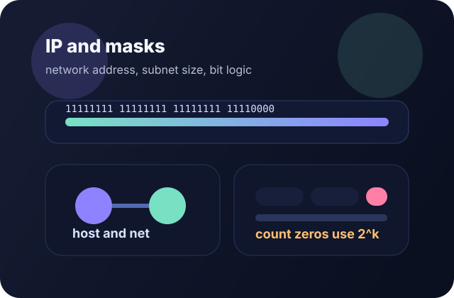
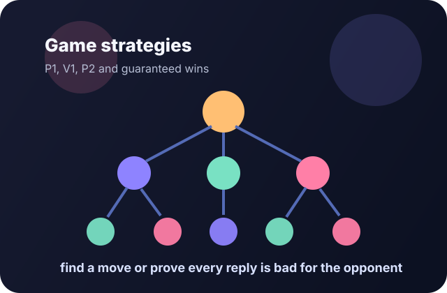
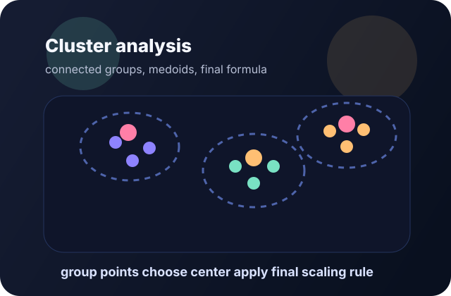

Все задания идут по порядку, с пометкой темы и ожидаемого навыка.
Как использовать
Открывай номер, смотри идею, копируй шаблон
У каждого номера есть краткая формула решения и типовые ошибки.
В карточках заданий есть шаблоны на 4 языках; ниже — отдельные запускаемые Python-разборы.
В каждом из 27 номеров есть открывающийся разбор с конкретным условием, шагами, проверенным Python-кодом и ответом. Шаблоны на четырёх языках адаптируются под свой вариант, а разборы показывают полный пример запуска.
Фокусные Темы
Номера, которые чаще всего хочется увидеть не в сухом виде

Задание 13
IP, маски и адрес сети
Сделал визуально понятный блок для самой частой темы, где путаются в двоичной записи и подсетях.

Задания 19-21
Игровые позиции и глубина выигрыша
Отдельный акцент на разницу между «есть ход» и «любой ход соперника», где чаще всего теряют баллы.

Задание 27
Кластеры и центры групп
Добавлен более современный визуальный блок под актуальную тему кластеризации и центров кластеров.
Типы заданий
Какие навыки покрывает шпаргалка
Практика • Python
Коды с фотографий: готовые примеры
Похожие переборы собраны по типам. Где условие на фото нечитабельно, приведён отдельный учебный пример — он так и помечен.
Как запустить и переделать под свою задачу
- Установи Python 3.10+ и открой PyCharm или любой текстовый редактор. Создай файл
solution.py. - Найди тип по кнопкам ниже, скопируй код целиком и вставь в файл. Нажми Run в PyCharm или выполни
python solution.py(на некоторых системахpython3 solution.py). - Сверь вывод с полем «Проверка». Затем измени только данные, перечисленные в «Что менять», и проверь условия своего варианта.
Все примеры используют только стандартную библиотеку. product допускает повторы, permutations — нет. В задачах на перебор следи за размером диапазона; в рекурсии сначала попробуй сократить выражение.
Задания